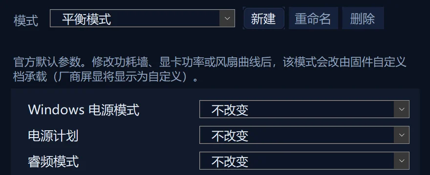
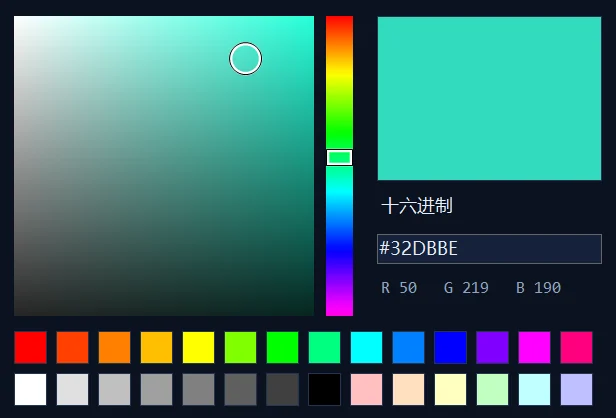

风扇曲线
CPU 与 GPU 各 16 个点，拖拽即可编辑，按模式分别保存。
L-Mechrevo 是机械革命游戏本的开源轻量控制中心。常驻托盘，一键切换性能模式、风扇曲线与显卡模式，替代厚重的官方控制台。
界面示意，数值为示例 · 试试切换性能模式
01性能模式
静音、平衡、静音狂暴、狂暴、自定义，五个模式一键切换。每个模式都能二次自定义，是否生效如实标注。
耀世 16 Ultra 出厂默认值
性能与噪音兼顾，日常首选。
Ultra 9 275HX + RTX 5080 Laptop · EC 实测
内置模式也能调，设置按模式分别保存。
实测真机满载
在内置模式里直接改功耗墙，固件并不执行：设成 40 W，满载实测仍是 82.8 W。L-Mechrevo 会把这类修改自动放到固件的自定义槽里运行，同样设 40 W，满载实测 40.1 W。
每一项设置都标注这三种状态，不做看起来生效的假功能。

02功能
风扇、显卡、灯效、充电、监控，常用功能一个不少。界面只显示你的机型真正支持的功能。
CPU 与 GPU 各 16 个点，拖拽即可编辑，按模式分别保存。
30–50 系集显、标准、直连，10–20 系 NVIDIA 首选显卡；只显示本机可用的选项，高亮跟随硬件实际状态。
设定上限后，自动确认硬件是否真正执行。
自带软件灯效；机型不支持时，自动交给官方 GCU 灯效。

CPU / GPU 温度、功耗与风扇转速一目了然，打游戏时也能随时看到。
刷新率可随性能模式自动切换，亮度随手调。
机械革命蓝牙水冷的泵速、风扇与灯光，直接在这里调。
开机自动启动，右键托盘图标即可切换模式。
有新版本时在软件里直接更新，不用再找下载地址。
遇到问题，在软件里直接发送问题反馈（可附带脱敏日志），或点「诊断」导出诊断包，定位更快。
卡片中的界面为示意，数值为示例；截图来自 L-Mechrevo 真实窗口。
03适配
面向 Uniwill / AiStone 平台的机械革命游戏本。安装器按显卡代际自动选择对应的官方 GCU 服务，界面只显示你的机型真正支持的功能。
旧版 GCU 服务GamingCenterU 时代
新版 GCU 服务30–50 系
已真机验证
Intel Core Ultra 9 275HX · NVIDIA RTX 5080 Laptop
已完成真机验证；本页的出厂默认功耗也来自这台机器的 EC 实测。
欢迎反馈
其他机型欢迎到 GitHub 反馈使用情况，附上软件内导出的诊断包，帮助把适配做得更完整。
到 GitHub 反馈04轻量与安全
L-Mechrevo 通过本机的官方 GCU 服务控制硬件，所有硬件控制都在你的电脑上完成。
通过本机官方 GCU 服务（本地 MQTT，127.0.0.1）下发指令，硬件控制全部在你的电脑上完成。
安装器为 13688 端口添加入站防火墙规则，阻止局域网访问。
安装器会校验厂商组件的数字签名。
源码以 GPL-3.0 协议公开在 GitHub，任何人都可以审阅。
只发送匿名心跳（版本、机型、显卡代际、失败次数等）和脱敏的运行日志片段（去掉用户名、计算机名与设备地址），用于统计适配情况、排查问题；首次打开时会告知，可在设置里随时关闭。
05下载
免费、开源、无广告。
0.290.6 发布于 56.0 MB
安装时会自动移除官方控制台；从旧版升级会保留你的模式参数与风扇曲线。
EF5C8B8E48B614ACB9AA7666A15D4CAFD637C1B40C12A3027511BD723604D7B3
06常见问题
没找到答案？到 GitHub Issues 提问。
不需要。安装时会自动识别并移除官方控制台，硬件控制依然通过本机的官方 GCU 服务完成，安装器会按显卡代际自动选择对应版本；以后升级 L-Mechrevo 会保留你的模式参数与风扇曲线。
支持 GTX 10、GTX 16、RTX 20、30、40、50 系的机械革命游戏本（Uniwill / AiStone 平台），界面只显示你的机型真正支持的功能。目前已在机械革命耀世 16 Ultra（RTX 5080 Laptop）上完成真机验证，其他机型欢迎到 GitHub 反馈。
只有匿名心跳（版本、机型、显卡代际、失败次数等）和脱敏的运行日志片段（去掉用户名、计算机名与设备地址），用于统计适配情况、排查问题；首次打开时会告知，可在「设置 → 隐私与反馈」随时关闭。问题反馈只在你点「发送」时上传。硬件控制全部在本机完成。
L-Mechrevo 的设计理念借鉴了 G-Helper（华硕笔记本的轻量控制工具）：小巧、常驻托盘、替代厚重的官方软件。L-Mechrevo 是专为机械革命游戏本开发的独立项目，同样以 GPL-3.0 协议开源。
在软件里点「设置 → 隐私与反馈 → 问题反馈…」直接发送，发送后会得到一个编号；也可以点「诊断」导出诊断包，到 GitHub Issues 描述问题并附上。